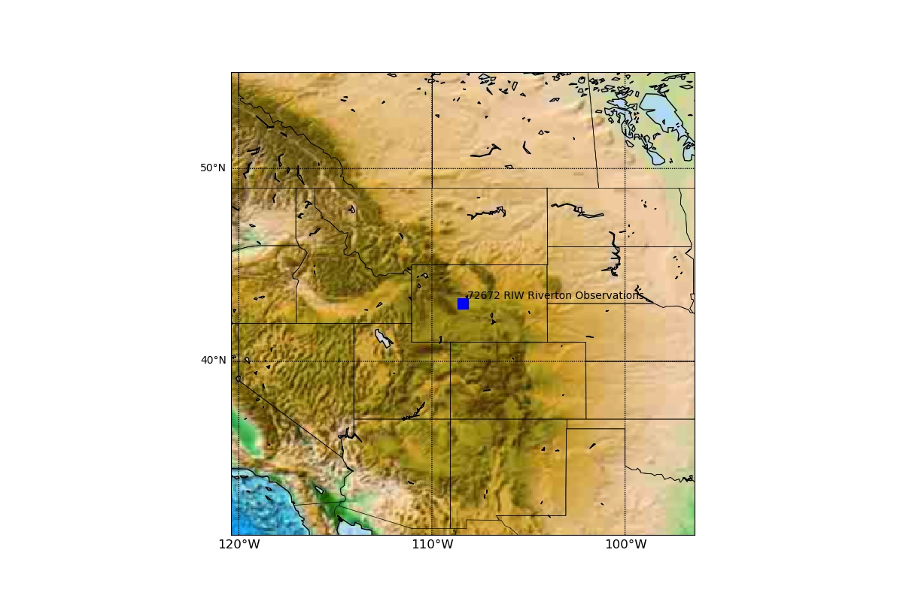

Welcome to the radio documentation!¶
This code reads data from http://weather.uwyo.edu/upperair/sounding.html and plots a tephygram of the data.
The last plot produced by the program was a sonde launched by this weather station:

weather station¶